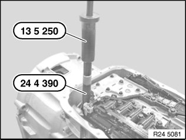
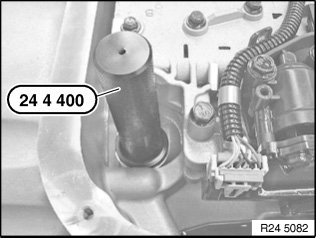

24 11 666 Removing and Installing/Replacing Transmission Oil Filter Gasket
24 11 666 Removing and installing/replacing transmission oil filter gasket (GA6L45R)Special tools required:
Important!
After completion of work, check gear oil level.
Use only approved transmission oil.
Failure to comply with this instruction will result in serious damage to the transmission.
Necessary preliminary tasks:
^ Remove transmission oil filter

Pull transmission oil filter gasket out of housing with special tools 24 4 390 and 13 5 250.

Drive transmission filter gasket into housing with special tool 24 4 400.